| |
Six Flags Magic Mtn Summer 2019
All right. Time for our Six Flags Magic Mountain Summer Update. Now....calling this the summer update is kind of innacurate. It's more like our SFMM February-September Update. So this is SFMM Spring & Summer, with a little bit of Fall & Winter too. But....bah! F*ck it! Might as well use all the visits to SFMM I did since,...I didn't go as much this year due to time restraints. But oh well. We have a bit of SFMM to go over in this update. Visit #1. Hmm. Driving to Six Flags Magic Mountain.....and something is different. Yeah. They opened up a new McDonalds right across from the Wendys we used to always visit. Hey, might as well give it a visit. New Resteraunt. Same old McDonalds.
Excuse me Six Flags Magic Mountain. What month is it again? That's right. It's January. Late January. And what are those that are up? That's right. They're Christmas Decorations. In January. Soon to be February. So....TAKE THEM F*CKING DOWN!!!
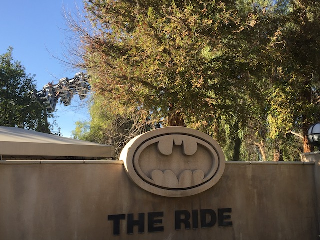
All right. Time to get the 2019 Coaster Season started.
 Nice whip from the heartline spin.
Nice whip from the heartline spin.
 I know there are many more B&M Inverts popping up, but this is still a classic and better than most of the new ones coming out.
I know there are many more B&M Inverts popping up, but this is still a classic and better than most of the new ones coming out.
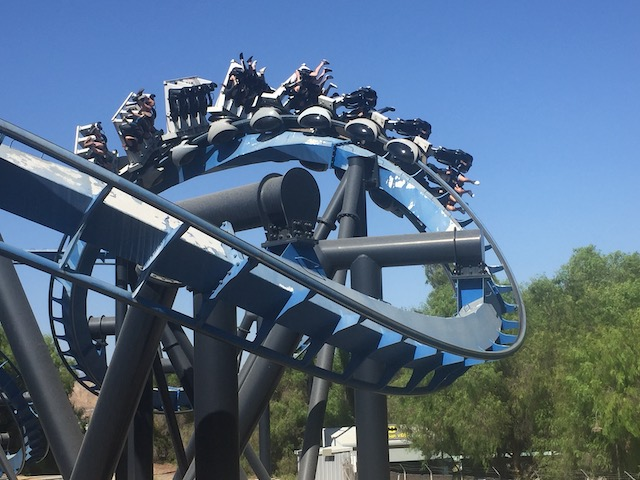
Oh no! I'm starting to see the original gray track! Hurry Eiffel 65! We need more blue over here!
LOL. How long ago did they stop that? ;)
OK. What the hell is up with Green Lantern? Why do I get the feeling that they're going to tear down Green Lantern, replace it with an S&S Free Spin (since they buy everything in bulk), call it Green Lantern, and pretend it's the exact same ride and that nothing ever happened to it?
So I finally tried Jammin Bumpers. And....it's the exact same ride as Sandblasters. Only shiner and with a better name. But the same stupid rules are here. =(
But hey. At least the trolls are also still here.
Hmm. I feel like something should be here. Like....a new coaster is supposed to be there. But....I don't see it. I guess it must be invisible.
Excuse me. Which way is Terminator?
 *groan* Well, at least you're warning us in advance about this.
*groan* Well, at least you're warning us in advance about this.
Visit #2. Hey look! Six Flags is advertising with Chick-Fil A now (Damn your homophobia problem cause your chicken is so good! Thank god for Raising Canes & Bojangles)!
 You know Premier Launched Coasters are great! So great in fact that we should build ANOTHER one right here at Six Flags Magic Mountain. =P
You know Premier Launched Coasters are great! So great in fact that we should build ANOTHER one right here at Six Flags Magic Mountain. =P
 All right. Back in March, Six Flags quietly announced on Facebook that Green Lantern is closed for good and that it is never opening up again. YES!!! I KNEW IT!!! THE FIRST HALF OF MY PREDICTION CAME TRUE!!! Now they just have to replace it with an S&S Free Spin. I've got my eye on you 2020 Announcements. Also, I'm so happy that my last ever ride on Green Lantern was a crazy unbalanced lots of flipping ride. So happy that I got to walk away from this ride with a random surprise good ride.
All right. Back in March, Six Flags quietly announced on Facebook that Green Lantern is closed for good and that it is never opening up again. YES!!! I KNEW IT!!! THE FIRST HALF OF MY PREDICTION CAME TRUE!!! Now they just have to replace it with an S&S Free Spin. I've got my eye on you 2020 Announcements. Also, I'm so happy that my last ever ride on Green Lantern was a crazy unbalanced lots of flipping ride. So happy that I got to walk away from this ride with a random surprise good ride.
It may not be any better than the other giant frisbees despite it being slightly better, but these rides are still awesome.
I see a lot of people that will soon be dissapointed.
Is it me or is there something off about that wait time sign?
 OK. It's May. Copperhead Strike (Very fun BTW) & Yukon Striker are already open. The others are testing. But West Coast Racers is still a pile of dirt. *laughs* Oh Six Flags Magic Mountain. ;)
OK. It's May. Copperhead Strike (Very fun BTW) & Yukon Striker are already open. The others are testing. But West Coast Racers is still a pile of dirt. *laughs* Oh Six Flags Magic Mountain. ;)
Boo! Was hoping to get on Superman today! =(
Hopefully this water fountain has been fixed by now. If not....please do so.
Holy Crap! This is the line for Tatsu!? Quick! Get on it now before it grows a line!
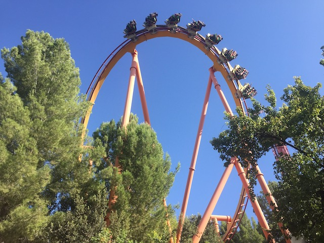
Bah! After Flying Dinosaur, you're nothing special!
 Though to be fair, that pretzal loop is still super intense and one of the craziest coaster elements.
Though to be fair, that pretzal loop is still super intense and one of the craziest coaster elements.
 Hmm. I wonder what's gonna happen to the Green Lantern memorial.
Hmm. I wonder what's gonna happen to the Green Lantern memorial.
 Hi Kings Island! How's it going? =P
Hi Kings Island! How's it going? =P
Driving home, I come across....some lights. So naturally, I had to stop and see what it all was. Turns out there's a fair in Fillmore. Wish I could've done stuff and checked out their Zipper. But....I don't have the money. Plus, visiting random fairs in the past hasn't worked out.
Visit #3. All right. Looks like Six Flags still hasn't taken care of that geese problem.
We're here for a summer visit. And....by the looks of the parking lot, we're not gonna be doing a lot today.
"I am a nice guy. Not a mindless eating machine. If I want to change this image, I must first change myself. Jelly Bellys are friends. Not food."
Am I seriously seeing Holiday in the Park stuff? IN JULY!!? WE'RE AS FAR FROM CHRISTMAS AS POSSIBLE!!! AND....Is this laziness or are you so confident in Holiday in the Park that you want to advertise it yearround (You may do a decent job here, but after seeing a Japanese Parks Christmas Celebrations, hang it up. You can't compete with that).
Ooh! The Coke Zone sounds like a good place for me!
Yes! Give me ALL the Coke please! =)
Liars! They never offered me a Coke Float. >=(
But we were able to get samples of all sorts of different types of Cokes, such as Orange and Orange Vanilla, and hey. I don't even think Freestyle Machines have Orange Vanilla Cokes. So good.
"Come on Kevin! We need to try ALL the Cokes!"
 Out of all the kiddy coasters here, this is the only one that is semi-enjoyable to ride and I'm actually willing to touch.
Out of all the kiddy coasters here, this is the only one that is semi-enjoyable to ride and I'm actually willing to touch.
Cha-Ching. I know a certain someone who's getting a new credit right now. =P
"I tawt I taw a puddy cat! No! Just Incrediblecoawters!""
*gasp* The pirate ship is closed!? My day at Six Flags Magic Mountain is now offically ruined! =(
Hey. There's still Swashbuckler if old-school flats are your thing.
 OK. It may be busy today, but....we still gotta get on Twisted Collosus. And hey. At least it doesn't have THAT long a line.
OK. It may be busy today, but....we still gotta get on Twisted Collosus. And hey. At least it doesn't have THAT long a line.
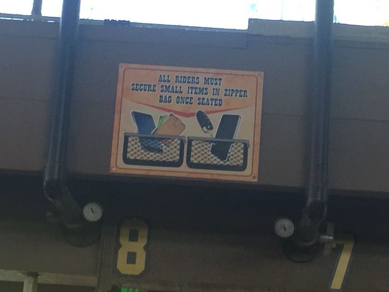
I love these being on New Texas Giant, then Twisted Colossus, and Goliath. Now please keep adding them onto ALL your coasters (that you can) at ALL the Six Flags parks.
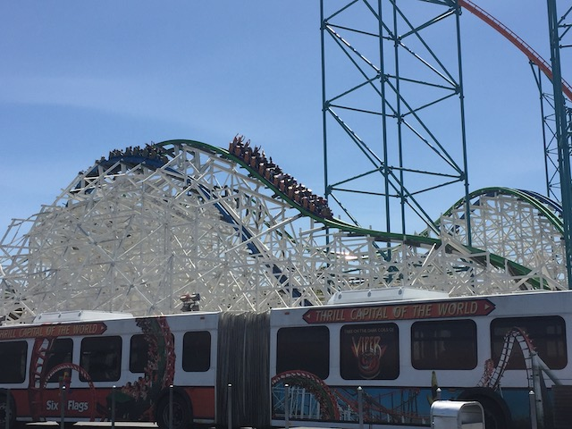
So happy to have an RMC less than hour away from me. =)
 It's like two short kickass rides rolled into one.
It's like two short kickass rides rolled into one.
Finally managed to see that Kwerk Show. Meh, it was all right. Nothing special.
Hi ESO Building! Boy, that brings back memories of working at SFMM!
Something tells me that D.C Universe is gonna grow and soon ecompass the area including Riddlers Revenge, Justice League, and Tidal Wave (I'm officially predicting that Tidal Wave has less than 5 years left).
 Hello New Flashback (Seriously, when are they gonna tear it down?).
Hello New Flashback (Seriously, when are they gonna tear it down?).
Hey guys! SFMM's Facebook from March was wrong! Green Lantern is only temporarily unavaliable! It'll open back up soon enough!
"Hmm. Should I take this cape and make myself a superhero? It's tempting."
OK. I'm lost. What the hell was this thing?
 Come one! Come all! Get your rides on Tidal Wave while you still can!
Come one! Come all! Get your rides on Tidal Wave while you still can!
 Hey! For those of you who complain that we're nothing but coasters, what do you have to say about this stock dark ride we cloned everywhere!?
Hey! For those of you who complain that we're nothing but coasters, what do you have to say about this stock dark ride we cloned everywhere!?
"I know! I'm just as surprised at how good this ride is as you are!"
 Hmm. Not bad. But I certainly can improve.
Hmm. Not bad. But I certainly can improve.
"Oops! My bad! This dark ride isn't that good after all. That's just the laughing gas talking."
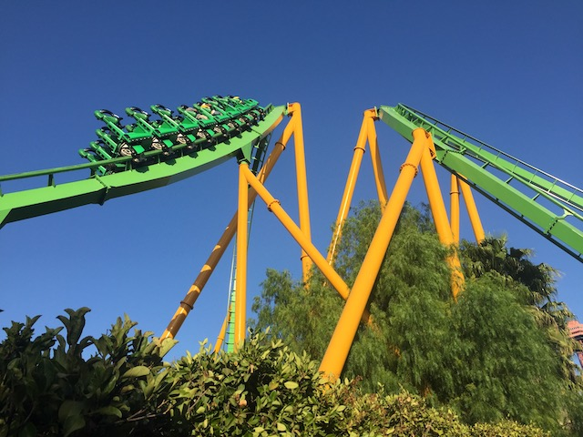
Ugh. Sick of all these summer lines. What is there for us to ride?
It may be a packed summer day, but we can still ride Riddlers Revenge thanks to this little beauty.
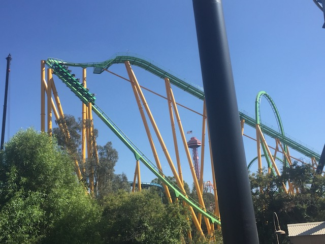
Without a doubt, the best stand up coaster ever built (Sorry SFOG).
Visit #4. We're back at the park. Hopefully we'll actually be able to see a certain ride be vertical by now.
 DAMN!!! SO CLOSE TO HAVING TWISTED COLLOSUS RACING!!!
DAMN!!! SO CLOSE TO HAVING TWISTED COLLOSUS RACING!!!
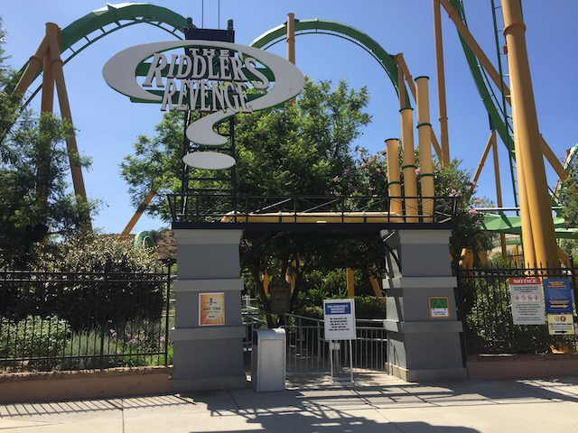
Sorry folks. But Riddlers Revenge is closed today.
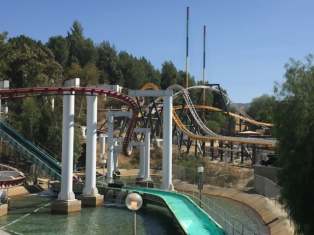
Oh yeah. I forgot that there was a roller coaster under construction here.
 Hmm. Construction on West Coast Racers is coming along ni...IT'S AUGUST!!!? F*CK!!! NEVER MIND!!!
Hmm. Construction on West Coast Racers is coming along ni...IT'S AUGUST!!!? F*CK!!! NEVER MIND!!!
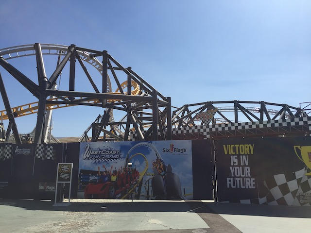
Don't worry. West Coast Racers will open. EVENTUALLY!!!
Wait a minute. It's August. And....that's Fright Fest stuff out.
While not quite as annoying as Christmas stuff out of season since....horror stuff can be enjoyed yearround. But still. Quit jumping the gun and take it down. ;)
 I know a certain friend who is happy to see Revolution.
I know a certain friend who is happy to see Revolution.
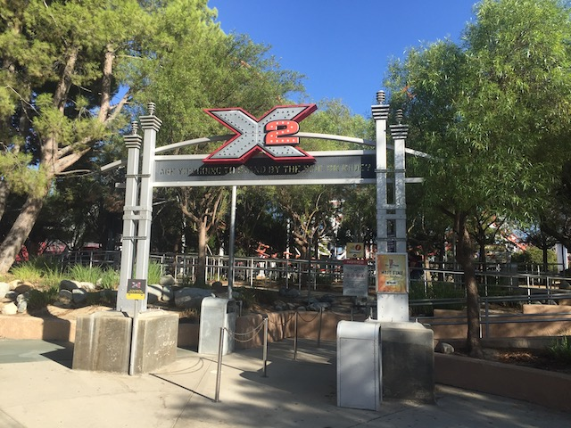
I know it's still the best coaster in California and all, and still a Top 10 Coaster. But...
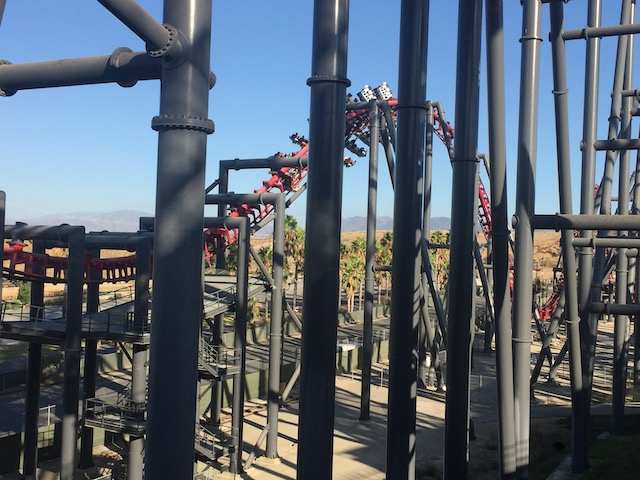
*Sigh* I miss Eejanaika. =(
And finally, we're on Visit #5. Insert "Walk you lazy assholes" joke here.
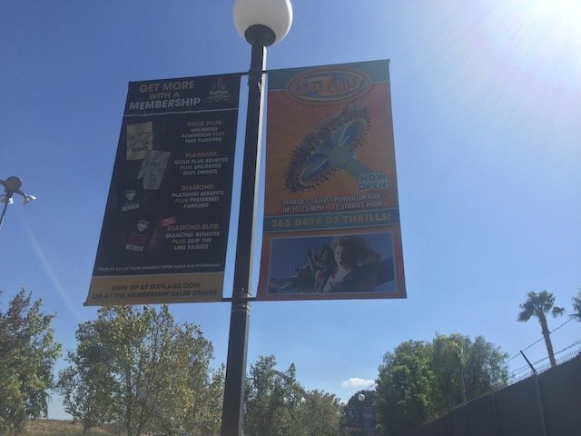
LOL. I love how the one thing Magic Mountain is marketing is Crazanity. Normally, they'd be marketing next years new ride about now. But SFMM is the only park to not get ANYTHING new for 2020 because "No new ride until you finish your West Coast Racers"! And besides, West Coast Racers IS the new 2020 addition. But they're not even marketing THAT!!! They're still marketing Crazanity from last year! What!? Are you embarassed that the public will say "Why isn't West Coast Racers open yet!?" if you advertise it!? Cause yeah. They should. But still! Probably should be marketing your new for 2020 (Possibly Very Late 2019 if you move it) Coaster. Hint Hint. ;)
Hmm. I wonder what that crane is doing in D.C Universe.
 Man. After seeing Green Lantern be built and even having an entire update dedicated to its opening, it's crazy to see them tear it down.
Man. After seeing Green Lantern be built and even having an entire update dedicated to its opening, it's crazy to see them tear it down.
So it turns out that Green Lantern is being sent to La Ronde as Le Vipere. I'm not sure if this is because apparently Canadian Law will allow Green Lantern....I mean Le Vipere to run as it was intended, or if Six Flags just wanted to pawn off a ride to La Ronde and dumped it on them since it's a red-headed stepchild of the chain. Keeping my fingers crossed that La Ronde restores this ride to its former glory and the elephant ears come off when it moves to Canada. Wait. I'm counting on La Ronde to do something right!? Le Vipere is f*cked. =(
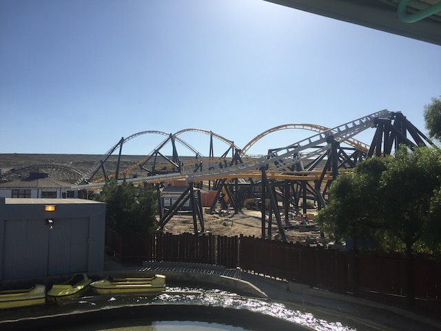
Well, at least in September, all the track for West Coast Racers is finally installed. Wait what? They still have to put in the track from the brake run to the station!? OH COME ON!!!
Home
|